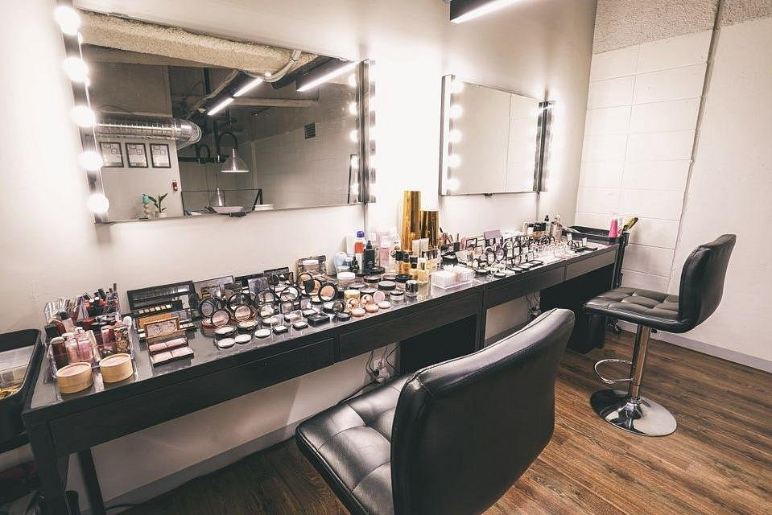

Carreira Profissional no Universo da Beleza
Descubra os caminhos para se consolidar como um maquiador de sucesso no mercado contemporâneo.

O Mercado de Trabalho Atual e Especializações
A carreira de maquiador profissional evoluiu drasticamente nas últimas décadas, deixando de ser vista apenas como uma ocupação complementar para se consolidar como uma indústria multibilionária e altamente competitiva. Hoje, o mercado exige profissionais versáteis, que compreendam não apenas a aplicação estética dos cosméticos, mas também conceitos profundos de atendimento ao cliente, biossegurança, psicologia comportamental e marketing digital. As oportunidades de atuação expandiram-se para além dos salões de beleza tradicionais, abrangendo setores dinâmicos como a maquiagem social focada em noivas e formandas, o mercado editorial de moda, produções audiovisuais para televisão e cinema, e a maquiagem artística para teatro e efeitos especiais.
Para se destacar em um cenário tão saturado, a especialização acadêmica contínua é um divisor de águas na trajetória do profissional. Cursos de aperfeiçoamento em técnicas internacionais, workshops de colorimetria avançada e certificações em atendimento de peles negras e maduras agregam um valor imensurável ao portfólio do especialista. Além da competência técnica clássica com os pincéis, o maquiador moderno precisa dominar ferramentas digitais de edição de imagem e captação de vídeo de alta resolução, transformando suas redes sociais em uma vitrine magnética capaz de atrair clientes engajados e dispostos a pagar um tíquete médio muito mais elevado por sua assinatura estética única.
A gestão financeira individual também se tornou um pilar indispensável para a sobrevivência do negócio próprio. Compreender custos operacionais fixos, depreciação de materiais de consumo diário, gastos logísticos com deslocamento em atendimentos em domicílio e investimentos recorrentes em atualizações de bancada separa os amadores dos verdadeiros empresários da beleza bem-sucedidos. O estabelecimento rígido de metas de faturamento anual e a criação de fundos de reserva financeira para períodos de baixa sazonalidade garantem a estabilidade a longo prazo e a longevidade da jornada profissional neste ecossistema de beleza.
Marketing Pessoal, Precificação e Ética
Saber cobrar de maneira justa pelo próprio trabalho é um dos maiores desafios práticos enfrentados por profissionais iniciantes e até mesmo por aqueles que já possuem alguns anos de estrada. A precificação correta de um serviço de maquiagem não deve jamais se basear apenas nos valores médios praticados pela concorrência local, mas sim em um cálculo matemático detalhado que envolva o tempo exato de execução do serviço, a qualidade e o custo dos insumos importados ou nacionais utilizados, as especializações conquistadas e os custos estruturais do espaço físico de atendimento. Um posicionamento de marca sólido, amparado por um marketing pessoal ético e sofisticado, permite que o maquiador justifique seus preços elevados e atraia um público-alvo muito mais qualificado.
A ética profissional e o cumprimento estrito de todas as normas vigentes de biossegurança regulamentadas pelos órgãos de saúde pública são obrigações inegociáveis para qualquer indivíduo que deseje atuar na área. A higienização rigorosa de pincéis e esponjas entre os atendimentos, a esterilização completa de espátulas metálicas, o uso obrigatório de placas descartáveis para fracionar produtos pastosos e a proibição absoluta da aplicação direta de aplicadores originais de rímel e gloss na mucosa das clientes são condutas essenciais que blindam a saúde do consumidor e solidificam a reputação de confiabilidade do maquiador no mercado corporativo.
Construir uma rede ativa de contatos profissionais com fotógrafos de moda, estilistas de alta costura, cerimonialistas de casamentos e cabeleireiros de renome acelera exponencialmente o crescimento e o alcance na carreira. Parcerias estratégicas em editoriais de moda e desfiles servem como excelentes laboratórios práticos de criação artística, além de gerarem material visual de altíssima qualidade para alimentar portfólios institucionais modernos e atrair o olhar analítico de grandes marcas de cosméticos interessadas em fechar contratos de patrocínio ou parcerias publicitárias.
Segmentos de Atuação e Desenvolvimento de Portfólio
O campo de atuação para um maquiador profissional contemporâneo é vasto e oferece diferentes caminhos dependendo do perfil artístico e comercial de cada indivíduo. O segmento social, focado no atendimento de noivas, madrinhas e debutantes, destaca-se como o mais lucrativo e com maior demanda recorrente ao longo do ano. Para atuar nessa vertente, o profissional precisa desenvolver uma sensibilidade extrema para traduzir os desejos emocionais da cliente em técnicas de alta durabilidade, capazes de resistir intactas ao suor, ao choro e às fortes luzes dos estúdios fotográficos de coberturas cinematográficas.
Por outro lado, o universo da moda e do ambiente editorial exige uma mentalidade voltada para a criação de conceitos conceituais e interpretação de tendências das passarelas internacionais. Nesse nicho, o maquiador trabalha em colaboração direta com diretores de arte para criar visuais que conversem perfeitamente com a proposta da coleção de roupas apresentada. O portfólio para esse mercado deve ser focado em imagens limpas de alta fidelidade e em técnicas de correção sutis, valorizando a textura natural da pele humana sem a necessidade de coberturas pesadas que possam parecer artificiais diante das lentes fotográficas em alta resolução.
Por fim, a indústria do audiovisual e das produções cinematográficas abre portas para técnicas voltadas para câmeras de ultra definição, onde cada detalhe é amplificado na tela grande. O domínio de produtos específicos para tecnologia digital e o conhecimento prático de efeitos especiais de caracterização, como a simulação de cicatrizes, hematomas ou envelhecimento teatral, expandem drasticamente o campo de atuação do profissional. Independentemente da escolha de especialização, a dedicação integral, a pontualidade rígida e o respeito à individualidade de cada pele são as chaves de ouro para a construção de uma carreira estável e próspera.